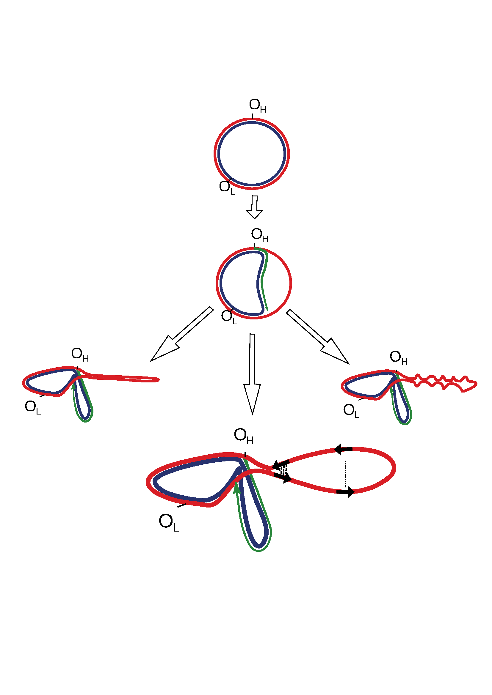
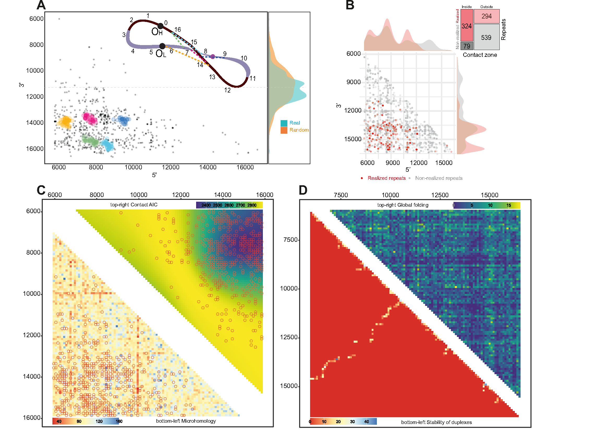
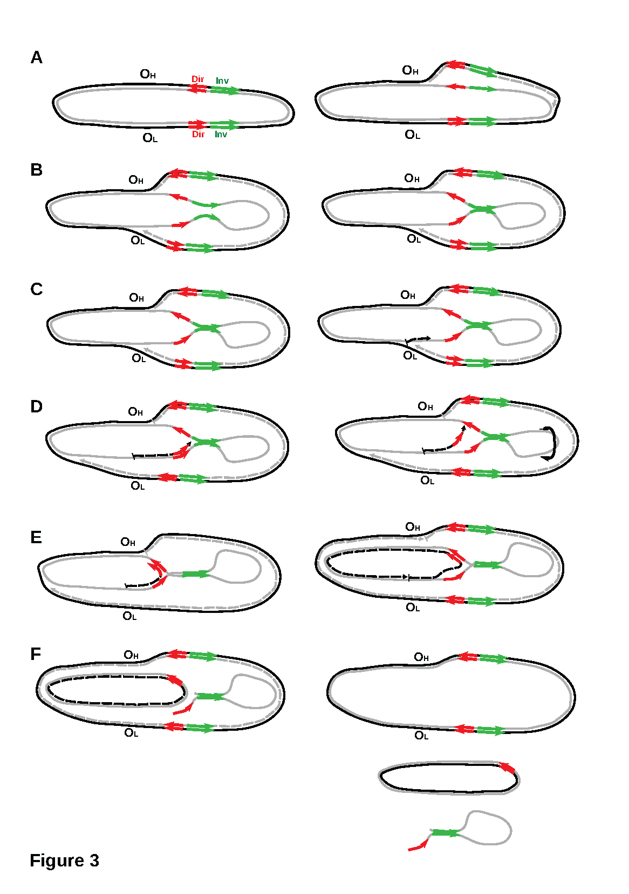

Last updated: 2023-04-05
Checks: 7 0
Knit directory: GlobalStructure/
This reproducible R Markdown analysis was created with workflowr (version 1.7.0). The Checks tab describes the reproducibility checks that were applied when the results were created. The Past versions tab lists the development history.
Great! Since the R Markdown file has been committed to the Git repository, you know the exact version of the code that produced these results.
Great job! The global environment was empty. Objects defined in the global environment can affect the analysis in your R Markdown file in unknown ways. For reproduciblity it’s best to always run the code in an empty environment.
The command set.seed(20230404) was run prior to running
the code in the R Markdown file. Setting a seed ensures that any results
that rely on randomness, e.g. subsampling or permutations, are
reproducible.
Great job! Recording the operating system, R version, and package versions is critical for reproducibility.
Nice! There were no cached chunks for this analysis, so you can be confident that you successfully produced the results during this run.
Great job! Using relative paths to the files within your workflowr project makes it easier to run your code on other machines.
Great! You are using Git for version control. Tracking code development and connecting the code version to the results is critical for reproducibility.
The results in this page were generated with repository version baf2fd4. See the Past versions tab to see a history of the changes made to the R Markdown and HTML files.
Note that you need to be careful to ensure that all relevant files for
the analysis have been committed to Git prior to generating the results
(you can use wflow_publish or
wflow_git_commit). workflowr only checks the R Markdown
file, but you know if there are other scripts or data files that it
depends on. Below is the status of the Git repository when the results
were generated:
Ignored files:
Ignored: .Rproj.user/
Ignored: 1_Raw/.DS_Store
Ignored: 2_Derived/.DS_Store
Ignored: 3_Results/.DS_Store
Ignored: renv/library/
Ignored: renv/staging/
Unstaged changes:
Modified: 3_Results/SlipAndJump.HomologyAndRepeats.txt
Modified: 3_Results/heatmap_folding_stability.svg
Modified: 3_Results/heatmap_global_folding_sw100.pdf
Modified: 3_Results/heatmap_microhomology_AIC.pdf
Modified: 3_Results/heatmap_microhomology_AIC_wt_deledions.svg
Modified: 3_Results/violin_rep_center_release.pdf
Modified: 3_Results/violin_rep_flanked_length_release.pdf
Modified: 3_Results/violin_rep_folding_infsign_np.pdf
Modified: 3_Results/violin_rep_folding_infsign_p.pdf
Note that any generated files, e.g. HTML, png, CSS, etc., are not included in this status report because it is ok for generated content to have uncommitted changes.
These are the previous versions of the repository in which changes were
made to the R Markdown (analysis/index.Rmd) and HTML
(docs/index.html) files. If you’ve configured a remote Git
repository (see ?wflow_git_remote), click on the hyperlinks
in the table below to view the files as they were in that past version.
| File | Version | Author | Date | Message |
|---|---|---|---|---|
| Rmd | baf2fd4 | Evgenii O. Tretiakov | 2023-04-05 | Start workflowr project. |
| html | baf2fd4 | Evgenii O. Tretiakov | 2023-04-05 | Start workflowr project. |
This websyte contains code and output of the analysis of mitochondrial DNA deletions and Global structure data for the article Shamanskiy V et al., 2023.
Aging in postmitotic tissues is associated with clonal expansion of somatic mitochondrial deletions, the origin of which is not well understood. Deletions in mitochondrial DNA (mtDNA) are often flanked by direct nucleotide repeats, but this alone does not fully explain their distribution.

Figure_1. Potential secondary structures formed by a single-stranded parental heavy chain during mtDNA replication. The lower panel shows that direct repeats, marked by black arrows, have different chances of being realized into deletions as a function of a spatial structure. The close spatial proximity of repeats (bold dotted lines) increases the probability of deletion formation, while for repeats that are spatially separated by a greater distance, this probability is decreased (thin dotted line).
Here, we hypothesized that the close proximity of direct repeats on single-stranded DNA might play a role in the formation of deletions. By analyzing human mtDNA deletions in the major arc of mtDNA, which is single-stranded during replication and is characterized by a high number of deletions, we found a non-uniform distribution with a “hot spot” where one deletion breakpoint occurred within the region of 6-9kb and another within 13-16kb of the mtDNA. This distribution was not explained by the presence of direct repeats, suggesting that other factors, such as the spatial proximity of these two regions can be the cause. In silico analyses revealed that the single-stranded major arc may be organized as a large-scale hairpin-like loop with a center close to 11kb and contacting regions between 6-9 kb and 13-16 kb, which would explain the high deletion activity in this contact zone. The direct repeats located within the contact zone, such as the well-known common repeat with a first arm at 8470-8482 bp (base pair) and a second arm at 13447-13459 bp, are three times more likely to cause deletions compared to direct repeats located outside of the contact zone.

Figure_2. Secondary structure of mtDNA. A. Clusters of deletions within the major arc. The majority of clusters are located close to each other within the potential contact zone. The colors on the scheme on top correspond to the clusters. The vertical density plots on the right part of the figure demonstrate the distribution of deletion centers: real (observed) and random (expected); B. Realized (red) versus non-realized (gray) repeats tend to be enriched in the potential contact zone. Mosaic-plot of repeats (realized versus non-realized) within and outside the potential contact zone; C. Bottom-left: heatmap of the microhomologies between 100 bp windows within the major arc. Microhomology alone poorly explains the distribution of the deletions (empty circles). Top right: heatmap of the data-driven contact zone, based on the AIC of the compared models. D. In silico approach for major arc global folding prediction. Bottom left triangle: contact matrix derived from the in silico folding estimation of the major arc’s whole single-stranded heavy chain; top right triangle: contact matrix derived from the in silico folding estimation of 100 bp windows of the single-stranded heavy chain of the major arc.
An analysis of age- and disease-associated deletions demonstrated that the contact zone plays a crucial role in explaining the age-associated deletions, emphasizing its importance in the rate of healthy aging. Overall, we provide topological insights into the mechanism of age-associated deletion formation in human mtDNA, which could be used to predict somatic deletion burden and maximum lifespan in different human haplogroups and mammalian species.

Figure 3. Integral scheme of the origin of mtDNA deletions. The parental heavy strand is marked by a grey line, while the parental light strand is marked by a black line. Daughter strands are indicated by dotted lines. Direct nucleotide repeats are marked by red arrows, and inverted nucleotide repeats are marked by green arrows. The origin of replication of the heavy strand (OH) and the origin of replication of the light strand (OL) are labeled. (A) At the start of replication, the daughter heavy strand (dotted gray line) is replicated on the template of the parental light strand (black line), and the replication fork begins to move from OH towards OL. (B) During this time, the parental heavy strand remains single-stranded (ssDNA) for a significant amount of time, and different types of microhomology, including inverted repeats (green arrows), can fold the spatial structure. (C) Once the first replication fork reaches OL, the second one begins replicating the daughter’s light strand (dotted back line) on the template of the parental heavy strand. (D) The second replication fork stalls near the stem initiated by the inverted repeats. If the stalling time is sufficiently long and the spatial structure of ssDNA cannot be resolved, the new-synthesized daughter chain dissociates partially and re-aligns with the second arm of the direct repeat. If ssDNA forms a stem, it may rotate (as indicated by the black arrow), potentially bringing direct repeats even closer together. (E) This allows the replication fork to continue replication. (F) Replication of the daughter light strand is finished, and the ssDNA loop region disappears either in the second round of mtDNA replication (See figure 5f in Persson Ö et al, 2019) or when mtDNA with deletions is repaired, and ssDNA is degraded.
sessionInfo()R version 4.2.2 (2022-10-31)
Platform: x86_64-pc-linux-gnu (64-bit)
Running under: Ubuntu 22.04.1 LTS
Matrix products: default
BLAS: /usr/lib/x86_64-linux-gnu/openblas-pthread/libblas.so.3
LAPACK: /usr/lib/x86_64-linux-gnu/openblas-pthread/libopenblasp-r0.3.20.so
locale:
[1] LC_CTYPE=en_US.UTF-8 LC_NUMERIC=C
[3] LC_TIME=en_US.UTF-8 LC_COLLATE=en_US.UTF-8
[5] LC_MONETARY=en_US.UTF-8 LC_MESSAGES=en_US.UTF-8
[7] LC_PAPER=en_US.UTF-8 LC_NAME=C
[9] LC_ADDRESS=C LC_TELEPHONE=C
[11] LC_MEASUREMENT=en_US.UTF-8 LC_IDENTIFICATION=C
attached base packages:
[1] stats graphics grDevices datasets utils methods base
other attached packages:
[1] here_1.0.1 lubridate_1.9.2 forcats_1.0.0 stringr_1.5.0
[5] dplyr_1.1.1 purrr_1.0.1 readr_2.1.4 tidyr_1.3.0
[9] tibble_3.2.1 ggplot2_3.4.2 tidyverse_2.0.0 workflowr_1.7.0
loaded via a namespace (and not attached):
[1] tidyselect_1.2.0 xfun_0.38 bslib_0.4.2 colorspace_2.1-0
[5] vctrs_0.6.1 generics_0.1.3 htmltools_0.5.5 yaml_2.3.7
[9] utf8_1.2.3 rlang_1.1.0 jquerylib_0.1.4 later_1.3.0
[13] pillar_1.9.0 glue_1.6.2 withr_2.5.0 lifecycle_1.0.3
[17] munsell_0.5.0 gtable_0.3.3 evaluate_0.20 knitr_1.42
[21] tzdb_0.3.0 callr_3.7.3 fastmap_1.1.1 httpuv_1.6.9
[25] ps_1.7.4 fansi_1.0.4 Rcpp_1.0.10 renv_0.17.2
[29] promises_1.2.0.1 scales_1.2.1 cachem_1.0.7 jsonlite_1.8.4
[33] fs_1.6.1 hms_1.1.3 digest_0.6.31 stringi_1.7.12
[37] processx_3.8.0 getPass_0.2-2 rprojroot_2.0.3 grid_4.2.2
[41] cli_3.6.1 tools_4.2.2 magrittr_2.0.3 sass_0.4.5
[45] whisker_0.4.1 pkgconfig_2.0.3 timechange_0.2.0 rmarkdown_2.21
[49] httr_1.4.5 rstudioapi_0.14 R6_2.5.1 git2r_0.31.0
[53] compiler_4.2.2